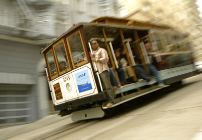
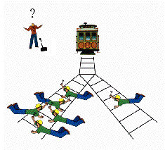
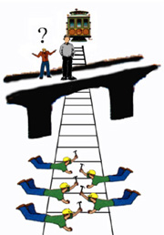

Tramvay Problemleri, Ahlak Psikolojisi ve Nöroetik
Felsefeci dediğin tembel adamdır. En iyi felsefe de ona göre koltuktan yapılandır. Oturup derin derin düşünürsem bulurum aradığım cevabı der. En fazla bir ağaç gölgesine gider, ya da bir kafede kahvesini yudumlar. Katiyyen labaratuarla gözlemle alan çalışmasıyla işi olmaz. Dedik ya felsefeci dediğin tembel adamdır. Lakin işler biraz değişmeye başladı yakın zamanda, koltuk keyfi yapma devrelerinin sonuna yaklaşıyoruz. Yeni yeni moda olmaya başlayan deneysel felsefeden bahsedeyim dedim prenses. 20.yüzyılın ilk yarısında sıradan dil felsefesi (ordinary language philosophy) adı altında benzeri bir akım mantıksal pozitivizmin de etkisiyle bir ara baya popüler olmuştu. Amaçları, felsefecilerin sofistike jargonunu alaşağı etmek, kelimeleri günlük dilde kullanıldığı anlamlarına geri döndürüp felsefi problemleri çözümlemekti. Lakin, pek sokağa indikleri söylenemez, yine kendi felsefi sezgilerine dayanarak bu kelime normal dilde şu anlamda kullanılır, şu kelime bu anlamda kullanır derken kendi aralarında hangi kelimenin nasıl kullanıldığı konusunda anlaşmazlıklara düşüp, sokakdan değil bildiğin üç yastıklı koltuktan felsefe yaptıkları anlaşılınca modasını kaybetti.
Ama bu sefer iş başka. Bu sefer deneysel felsefeyle uğraşanlar harbiden kendi sezgilerine güvenmek yerine sokakdaki insanlar üzerinde deney yapıp onların sezgilerini ölçmeye çalışıyorlar. Cok yeni bir alan olduğu için yapılan işlerin çoğu geyik düzeyini geçmiyor henüz. Ama bazen ilginç sonuçlara ulaştıkları da oluyor. Bunlardan benim en hoşuma gideni ahlak felsefesinde ahlak psikolojisi üzerine yapılan çalışmalar. Efenim, ahlak felsefesi yıllardır felsefenin böyle en karman çorman, en ele avuca gelmez, en abudik gubidik tartışmaların döndüğü alan olmuştur. Cok da öyle geniş derin bir alan da sayılmaz, kabaca neyin ahlaki davranış olduğuna dair iki temel yaklaşım var: Kantçılık ve Faydacılık (utilitarianism).
Her moka maydanoz Kant abi, eğer bir şeyi getireceği sonuçlar için yapıcaksan, hiç yapma daha iyi, o iyi bir ahlaki davranış olmaz der. Bir şeyi, o şeyin kendisi iyi olduğu için yaparsan ancak o zaman ahlaki olarak iyi bir şey yapmış olursun. Sonuçları, arzularını, çıkarlarını salla, o davranış kendi içinde iyi bir davranış mı, dünyada ki herkes bu davranışı benimsemeli mi ona bakmak lazım. Bentham ve Mill’in başını çektiği faydacılık (utilitarianism) tayfası ise, ne diyon Kant abi ya, sonuçlarına bakmazsak nerden bilicez neyin iyi neyin kötü olduğunu. Asıl önemli olan bir davranışın sonuçları herkese faydalı oluyor mu olmuyor. Toplam faydayı artırıyorsa, o iyi bir davranıştır, artırmıyorsa kötü bir davranıştır.
Ahlak psikolojisinde çalışan felsefeciler allaha şükür neyin iyi neyin kötü olduğuyla, nasıl davranmamız gerektiğiyle ilgilenmiyorlar. Onları ilgilendiren soru nasıl davrandığımız, ahlaki konularda nasıl karar aldığımız. Yani Kantçılık mı faydacılık mı doğru bir ahlak felsefesidir yerine, sokakda ki adam ahlaki kararlar verirken Kantçı gibi mi davranıyor, yoksa faydacı gibi mi davranıyor, yoksa başka bir şey mi? Bunu test etmeninin bir belli düşünce deneyleriyle insanlari sınamaktan geçiyor.
Varsayalım bir plajda ki tek cankurtaran sensin prenses. Keyifle kulen de oturup dalgalı denizi seyrederken bir de ne göresin: Sağ tarfinda batmak üzere olan bir bot içinde de beş kisi, sol tarafında ise batmak üzere olan ikinci bir bot içinde de bir kisi. Ikisine de aynı anda yetişip kurtarman imkansız, ancak birini kurtarma sansın var. Hangi botu kurtarırsın?
Bu soru karşısında insanlar çok fazla tereddüt etmiyor, sen ettin mi bilmem. Genelde, ikisi de kurtarmak isterdim ama sadece birini kurtaracaksam bari en fazla sayıda insana faydam dokunsun o yüzden içinde beş kisi olan botu kurtarırdım diyorlar. Faydacı damarlarımız kabarmış her halde. Eyvallah, büyüksün.
Varsayalım ki prenses tren raylarında sabah yürüyüşüne çıktın, pırıl pırıl bir gün. Bir de ne göresin, bir adet tramvay hıp hızlı geliyor, tramvayın hattının üzerinde raylarda beş tane tramvaydan habersiz işçi duruyor. Önünde bir adet tramvayin hattını değiştirecek anahtar var, ama değiştireceğin hatta da bir işçi duruyor. Hattı değiştirirsen bir işçi olucek, degistirmessen beş işçi. Böyle bir durumda tramvayın hattını değiştirir misin?
Işler biraz zorlaşmaya başladı. Cok zor bir karar bile olsa, çoğu insan burada tramvayın hattını değiştirmenin doğru olduğunu düşünüyor. Sen bir şey yapmasan öteki hatta ki adam aslen gayet güvende de olsa, beş kisinin hayatını kurtarmak pahasına hattı değiştirmek ve o adamı öldürmek mantıklı görünüyor. Kendi kararını veresin prenses, ben devam ediyorum.
Bu sefer tren raylarının üzerinde ki bir köprüde sabah yürüyüşüne çıkmışsın. Yine ufukta bir tramvay görünüyor ve köprünün öbür tarafına bakınca ne göresin: beş işçi rayların üzerinde duruyor. Hobala! Ne yapmalı? Köprünün üzerinde tren raylarını izleyen başka bir adam var, bu adamı köprüden aşağı tramvayin önüne itersen tramvayı durdurup beş kisinin hayatını kurtarabilirsin. Hiç bir şey yapmazsan beş kisi olucek göz göre göre. Adamı itip beş kisinin hayatını kurtarmalı mi yoksa durup beş kisinin olumunu izlemeli mi?
Bunda hissiyatın nedir bilemiyorum prenses ama genel olarak insanlar beş kisinin hayatını kurtarmak pahasına bile olsa adamı köprüden aşağı itmenin yanlış olduğunu düşünüyorlar. Aslında bir önce ki senaryoya gayet benzer, iki durumda da tek adamlar aslında sen hiç bir şey yapmasan güvendeler. Ama birinde beş kisinin hayatını kurtarmak mantıklı görünüyor, diğerinde beş kisinin hayatını kurtarmak için bir adamı öldürmek mantıksız görünüyor. Üzerine bir düşün bakalım prenses, sence iki durum arasında ki fark ne.
Bu iki tramvay düşünce deneyi ahlaki bir açmaz olustuyor. Ikisi de aslında çok benzer yapıda ve benzer sonuçlara yol açıyor, beş kisi kurtuluyor, aslen güvende olan bir kisi oluyor. Faydacılık perspektifinden iki durum arasında bir fark yok, ama ahlaki sezgilerimizin öyle düşünmüyor. Belki Kant yardımımıza koşar burada. Misal Kant der ki insanları başka bir amaç için araç olarak kullanmak yanlıştır, köprüden adamı patates torbası gibi tramvayin önüne atmak bu yüzden yanlış. Tramvayin hattını değiştirirken öteki abiyi bir amaç için araç olarak kullanmıyoruz sonuçta. Biz tramvayin hattındaki beş kisi kurtarmaya çalışırken o abiyi istemeden oldurmuş oluyoruz.
Biz Kant Mill su bu aciklamalar getiriyoruz bu tramvay problemlerine verdigimiz yanitlara ama bu dusunce deneylerini yaparken beynimizde ne oluyor acaba? Felsefeci/Psikolog Joshua Green ve Jonathen Cohen tam da bu soruyu sorarlar ve beyinde neler olup bittigini anlamak icin bir fMRI calismasi yaparlar. Daha once bu tramvay problemlerini hic gormemis denekler fMRI makinesine yerlestirildikten sonra 60 tane cesitli tramvay problemleri turevi acmazlar verip cevaplarini alirlar. Problemleri iki kategori altinda toplarlar, kopru problemi gibi bire bir kisisel temas icerenlere ahlaki-kisisel (moral personal), anahtar problemi gibi kisisel temas icermeyen problemlere ahlaki-kisisel olmayan (moral impersonal), kontrol olarak da ahlaki hicbir sey icermeyen problemler kullanmislar (non-moral condition). Deneklerin cevap verdikleri sure icerisinde ise beyinlerinde olan bitende fMRI ile kayit altina alinir. Beyin aktivitesinden toparlanan verileriler uzerinden yapilan istatistiksel analizin sonucunda bu ahlaki-kisisel, ahlaki-kisesel olmayan ve ahlaki olmayan kosullar arasinda beyinde aktivite farki gosteren alanlarin soyle bir resimi ortaya cikar:
Figur 1: Greene, Joshua D., R. Brian Sommerville, Leigh E. Nystrom, John M. Darley, and Jonathan D. Cohen. 2001. An fMRI Investigation of Emotional Engagement in Moral Judgment. Science 293, no. 5537 (September 14): 2105-2108.
Ya da soyle daha somut anlasılır bir grafikte:
Figur 2: Farkli deneysel kosullarda aktive farki gosteren beyin alanlari. Sol taraf duygu ile ilsikilendirel alanlari, sag taraf is kisa donem hafiza ile iliskilendirilen alanlari gosteriyor. Siyah kolon ahlaki-kisisel kategorisi, beyaz kolon ahlaki-kisisel olamyan kategorisi, gri kolon ise ahlaki olmayan kontrol kategorisi. (Green et. al. 2001)
Yukardaki tablolardan da görüldüğü üzere ahlaki-kisisel kategorisi, ahlaki-kisisel olmayan ve ahlaki-olmayan kategorilerinden istatistiksel olarak manalı farklı aktivasyonlara yol açıyor, özellikle beynin duygusal merkezlerinde. Figür 1’de en sağdaki resimde beynin ortasında yanan ışık insula ya da insular kortex diye anılan sosyal duygular da dahil bir ton duygusal işlemle ilişkilendirilmiş bir alan. Köprüden adamı aticaz diyince Ali Desidero tarzı “5’e 1 falan anlamam, olmaz öyle şey, racona ters!” diye haykırması bundandır. Oysa anahtar değiştirme senaryosunda böyle bir kişisel temas olmadığı için insula gayet sakin takılırken, daha bilissel alanlar “1’e karşı 5, eee mantıklı olur bu iş” komutlarını eyleme geçirebiliyorlar.
Kişisel temas olayı kafana yatmadıysa prenses, söyle bir iki örnek daha vereyim. Mesela köprüden atma olayını direk iterek değilde bir kürekle iterek gerçekleştirsek diye sorulduğunda daha fazla sayıda insan olabilir o zaman demeye başlıyor. Köprüden uzakta, uzaktan kumandayla adamın üzerinde durduğu bir kapağı açıp aşağı düşürsek dediğimizde daha da fazla sayıda insan olur o zaman diyor. Yanı cidden fiziksel kişisel temas burada bizi asıl harekete geçiren, o teması kaldırdığın ölçüde insula aktivitesini azaltıp, daha faydacı rasyonel kararlar verebiliyorsun. Ki bunu da anlamak çok zor değil, daha önce bahsetmiştim, insanlar sosyal olarak bir grup içinde yaşamak için evrilmiş. Gruptaki insanlarla temas, o temaslarda nasıl davrandığın baya kritik mevzular, racona ters bir şey yapmamak lazım sakata gelmemek için. Ama öte yanda bilissel fonksiyonlarımız daha çok dış dünyadaki objeleri bir araç olarak manipule etmek için gelişmiş, ne biliyim tasdan balta yapmaca, çamurdan sürahi yapmaca falan. O bilissel fonksiyonları kullanırken çok duygusal olmana gerek yok allahin taşı çamuru iste, daha rasyonel ve faydacı olabilirsin.
Bu tramvay problemleri, adam atmaca, anahtar degistirmece gercek hayatta olmayacak felsefecilerin eglencesi problemler gibi geldiyse sana hani, kapanisi mevzuyu guncel bir konuya baglayarak bitirelim. Arundhati Roy gunumuzun en buyuk problemlerinden birinin insanlari ilgilendiren onemli kararlari alanlarla bu kararlardan etkilenenler arasinda ki ucurum oldugunu soyluyor. Plazalardaki ofislerinden, parlementolarinda ki koltuklarindan, korunakli karargahlarindan butun dunyayi ilgilendiren hayati kararlara imza atan patronlar, politikacilar, komutanlar verdikleri kararlarin sonucunda ne biliyim Hindistanda bir gemi sokum fabrikasinda akciger kanserinden olen insanlari, Cin’de cok dusuk maaslara montaj bandinda insani olmayan kosullarda calistirilan insanlari, Banglandes’de Pakistanda dogal afetlerden olen insanlari, Irak’ta Afganistan’da Filistin’de ve dunyanin baska bir cok yerinde savaslar sonucunda hayatini kaybeden insanlari ve daha nicelerini gormuyorlar. Cephe gerisinde karargahdan saldiri karari vermekle, cephede bu kararlari uygulamak farkli seyler beyin icin, o yuzden askerleri duygusuz emirlere itaat eden robotlara donusturen uzun bir egitimden geciririyorlar her halde. Yukarda bahsettiklerim uzerinden insanin nasil boyle buz gibi bir rasyonalite ve faydacilik ekseninde kararlar verebildigini anlamak cok zor degil. Kisisel cikarlar ve ekonomik iliskileri bir yana alirsak, bire bir insanlara olan etkilerini gormedigin ve dusunmedigin zaman, beyninde ki duygusal merkezler aktive olmayacak ve diger insanlari sanki tas veya camurmuscasina kullanabileceksin. Şahit olduklarımız da böyle bir tabloyu çağrıştırmıyor mu zaten?


{kind=link}
{kind=link}
{kind=link}
{kind=link}
{kind=link}
{kind=link}
reel hayatla bağlantısı olmayan düşünce deneylerini anlamlı bulmuyorum. üstelik bir de bu deneyden yola çıkarak aktardığın arundhati roy’un yorumu bana tamamen anlamsız geldi.
mrs. roy “günümüzün en büyük problemlerinden birinin”, karar vericilerle hakkında karar alınanların arasındaki uçurum olduğunu söylüyor. fakat bundan binlerce sene önce yaşayan bir mısır firavunuyla ehramlara taş taşıyan yahudi bir kölenin arasında bu uçurum yok muydu? ya da vergileri yükselten bir osmanlı padişahıyla gayri müslim reayanın arasında da yok muydu bu uçurum? kusura bakmayın ama bu uçurumun, modern dönemlere münhasır olduğunu söylemek naiflik olur.
karar alanlarla, bizler arasındaki uçurum, insanlar arası işbirliğinin ontolojik bi sonucudur. ne kadar insan bu işbirliğine, işbölümüne iştirak ederse, ölçek o kadar büyür ve tayyip erdoğanla fabrika kızının teması o kadar azalır. ve bu binlerce yıllık bir hikayedir, modernizmin getirdiği yeni bir şey değil.
öte yandan çin’de montaj fabrikasında çalışan işçi de, hindistanda söküm fabrikasında sağlığını kaybeden adam da, “karar verenlerin” ekonomik teşebbüsleri sayesinde ekmek yiyorlar. eğer kapitalist bir dünyada yaşamıyor olsaydık, bu insanlar tarımla meşgul olacaklardı muhtemelen. fakat herşey varit olur (everytginh happens). mevcut şartlar bunlar, ve o işçiler de bu şartları kabul ederek çalışıyorlar.
bir de pakistanda sel felaketinde ölenler, afganistan veya filistinde hayatını kaybedenler filan demişsin.. dürüst olalım. bu ölenleri sadece karar verenler mi umursamıyor? açık söyliyim ben de umursamıyorum. bunun nedeni vicdansız bir canavar olmam, ya da temas eksikliği filan da değil. bunun asıl nedeni, bu konularda tam bir enformasyon bombardımanına maruz bırakılmamız. her gün o kadar çok ölüm haberi alıyoruz ki buralardan (sünni şii çatışması, abd terörist kavgası, israil filistin anlaşmazlıkları, vs), artık ölüm haberlerine “ülfet” beslemeye başlıyoruz. hani çok kötü bir kokuyu bir müddet sonra duyumsamamaya başlarız ya, aynen öyle de vicdanımız bir süre sonra bu olumsuz haberlere karşı duyarsızlaşmaya başlar (trenlerde olduğu gibi tamponlar yaratmaya başlar. tren fren yaptığı zaman iki vagonun birbirine zarar vermemesi için araya yerleştirilen tamponlar gibi).
oysa bu ölüm haberlerini daha az sıklıkla öğrensek, daha duyarlı bir tavır içinde olacağımdan hiç şüphem yok. özetle, sözkonusu deneyin “temassızlık” üzerine bir implikasyonu olduğu iddiası pek de savunulabilir gibi durmuyor.
Dogru diyorsun mirasyedi de, bir de soyle bak. Yuzyillardir karar verenlerle bu kararlardan etkilenenler arasinda bir mesafe olmasi bunun gunumuzde bir ucuruma donustugunu degistirmiyor. Eskiden en azindan ayni topraklarda yasayan insanlar arasinda oluyordu bu, simdi wall street’de olan biten butun dunyayi etkiliyor. New York’daki bir hissederin Cin’de yasan bir adamla ne alakasi var? Roy bundan bahsediyor. Belki benim bu mevzuyu ahlak acmazlarina baglamam biraz zorlama ve biraz hizli cikarilmis bir sonuc olabilir. Acayip karmasik mevzulardan bahsediyoruz, oyle basit aciklamalari tabi ki yok. Ama en azindan kisisel cikarlar ve ekonomik iliskileri bir tarafa alirsak demistim, yani diger etmenleri goz ardi etmeden, bu da bir etmen olabilir demeye getiriyordum.
Iscilerin sartlari kabul ederek calistiklarina da tam katilmiyorum, adamin baska secenegi mi var ki kabul etmesin? Bu ekmek yemek muhabbeti de sanki bir lutufmus gibi sunuluyor, isverenin ekmegini yiyorsun falan. Yok boyle bir sey. isveren senin uzerinden hayvan gibi para kazaniyor, asil o senin emeginin ekmegini yiyor. Tarlanda calis, kendi besinini uret, bir sermayedarin kolesi olmakdan cok daha iyi. Kapitalizm sanki bir secenek varmis, biz bunu isteyerek secmisiz gibi kendini pazarliyor, ama yok oyle bir sey. Secenek olmasi icin opsiyonlarin olmasi gerekiyor.
Olenler seller felekatleri umursama olayina dediklerine katiliyorum. Beyin cok esnek bir yapi, ayni stimuluslara tekrar tekrar muhatab oldugunda onlari umursamamaya basliyor (habituation), yani dedigin bilgi bombardimini insanlari duyarsizlastiriyor dogrudur.
Paradokslar acmazlar uzerinde kafa yormak dusunmek bazi mevzulari ekstrem durumlarinda analiz etmek icin faydali araclar. Ama gercek hayattan kopuklar orasi dogru. Paradokslardan acmazlardan anladiklarimizi gercek hayatta uygulamak, gercek hayattan orneklerle aciklamak bize dusuyor. Benim icin butun bu tartismada en anlamli olani, gunluk hayatta ahlaki kararlar alirken bulundugun kontext, duygusal durumun en az ahlaki prensiplerin kadar etkili, belki daha bile fazla. Ve bu yeterince ilginc ve uzerine dusunulesi bir sonuc bence.
prenses’le tanistirmak istedigim bir yazar var yesil gazetede su siralar: durukan dudu.
tarzi bize yakin (durusu da), ilgimizi cekebilir.
http://yesilgazete.org/2010/10/21/orasi-oyle-de-bu-da-var-ama/
Benim bu, insanı köprüden atarak treni durdurma deneyinde kafama takılan kısım şu: niye köprüden kendimi atıp, treni durdurarak o beş kişiyi kurtarmayı düşünmüyorum da başka bir insanı atmayı düşünüyorum? Bence, beş kişiyi kurtarmak için köprüdeki bir kişiyi feda ederim diyenlerin bu soruyu sormaları gerek…
Guzel soru.
Güzel yorumlar tebrik ederim. Benim merak ettiğim Nietzsche’nin ahlak anlayışıyla bu ikilemi nasıl yorumlarız…Ne dersiniz. Yasaşın ölüm! Hepiniz ölün mü derdi?